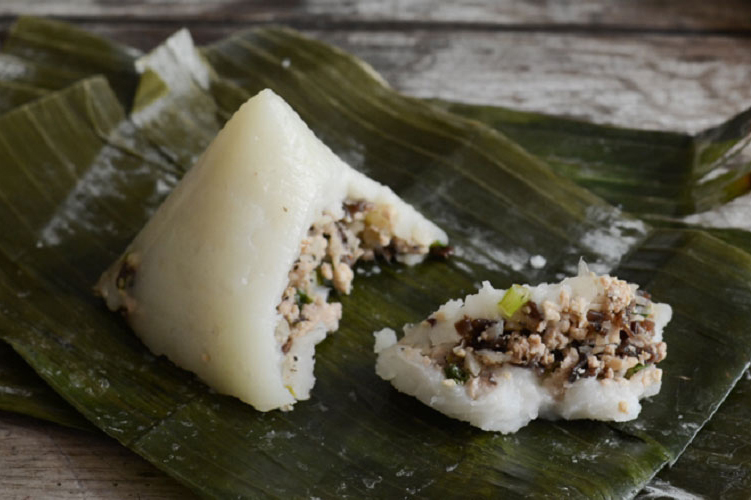

Banh Gio

Banh gio is a small, savory snack made with a rice flour outer layer,
ground pork, mushroom, and onion filling. It is a
dish traditional to Vietnam and has only grown in popularity as a street food since its
invention in northern Vietnam.
Wrappers
- 1 pound frozen banana leaves
This makes about 12-14 banh gio. Just using foil is also okay.
- Enough sheets of aluminum foil to match the size and count of banan leaves
Flour Mixture
- 2 cups corn starch
- 1 cup rice flour
- 3 tablespoon potato starch
- 3 cans chicken broth
This is roughly 4.5 cups of chicken broth
- 5 cups of water
- 3 tablespoon oil
- 1 1/3 tablespoon salt
- 1 tablespoon monosodium glutamate
This is optional.
Filling
- 1 medium onion
- 37 grams thinly sliced dried wood ear mushrooms
about 2 cups when hydrated
- 2 tablespoon cooking oil
- 1 pound ground pork
or substitute half or all with ground chicken
- 1 teaspoon salt
- 2 teaspoons sugar
- 1.5 teaspoon ground pepper
- 0.5 teaspoon monosodium glumtamate
optional
Steps
Preparing Wrappers
- Defrost the leaves if frozen.
- Wash banana leaves under running water to clean.
-
Cut into ~12x12 inch squares, depending on the size dumplings
you want, removing tough areas around the stem that are hard to fold.
- Set aside to dry before use.
- Cut out matching sized pieces of foil wrap finished pyramids
Flour Mixture
- Mix all ingredients in a large nonstick pot.
- Rest for 30-60 minutes (longer is better)
-
Turn the stove to high heat until it hits a boil, then lower to medium-high so it
maintains a low boil. After it hits the initial boil it should take about 3-6 minutes
to thicken. Times may vary. You want it thick enough so the filling doesn't fall through it,
but thin enough that you can still easily fill the wrappers' corners with it.
-
Turn off the stove and continue to stir for about 3 more minutes to smooth out the
mixture.
Filling
- Dice onion or roughly chop in food processor. Remove.
- Roughly chop mushroom by hand or in food processor.
- Add oil to a large pan on medium-high, and saute onion light brown and fragrant.
-
Add ground meat and saute until slightly cooked all over, but not fully cooked.
Let the meat get tough enough to break apart, and so it's not mushy.
-
Add mushroom and all remaining ingredients to the pan and saute so the mushroom
is slightly cooked. After the meat is fully cooked and no longer pink in the middle,
taste and add more salt or pepper if needed, to taste.
Wrapping Method
- Start with 1 layer of aluminum foil and place 1 layer of banana leaves on top
- Start the initial folds to make the first point of the pyramid
- Add a spoonful of the rice flour mixture-half the amount you want in this piece.
- Add a spoonful of the filling to the center.
- Add a spoonful of the rice flour mixture to encase the filling.
-
Finish wrapping, repeat until you use up all your ingredients. The goal is to evenly
split the rice flour mixure and filling for each pyramid into 12-14 equal portions.
Steaming
- Add ~2 gallons of water to a big steamer pot.
- Bring to a boil on high heat.
- Add all the banh gio to the steamer rack. Cook for about 40 minutes.
-
At about the 40 minute mark, open one up and check the rice flour mixture
for doneness. When it's clear it's done. Add more steam time as needed -- it's difficult to
overcook this.